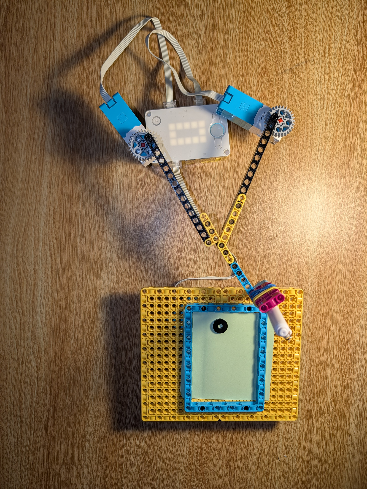

Project Portfolio

Project 5: Spirograph
For this project, I built and tested a simple drawing machine inspired by a Spirograph mechanism. The goal was to explore how rotating and orbiting motion can create repeating geometric patterns, while also thinking through mechanical constraints, stability, and alignment.
Instructions
Open the project instructions below.
Result
